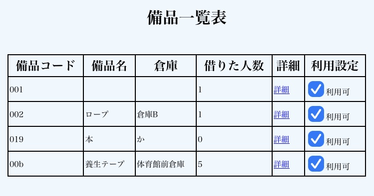
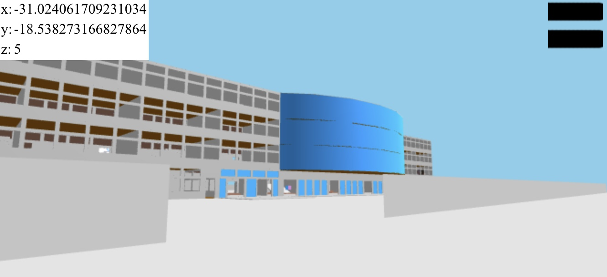

About me
2004年、東京都清瀬市生まれ。大学生。
高校時代にプログラミングに興味を持つ。以来、独学でJavaScriptを中心にHTMLやCSSを学び、高校の文化祭ではThree.jsで作成した校舎で擬似的に文化祭を展開した。
2021年9月から、Firebase RealtimeDataBaseを用いた備品管理システムを開発し、2022年4月に在学校の生徒会、文化祭委員会に提供。
2021年10月から文化祭委員会の委員長を務め、文化祭委員会の構成員と共に、コロナ禍が始まって以来3年ぶりの文化祭を成功させる。
今後は大学で専攻するデータサイエンス分野についての見識を深めるとともに、事業として展開していけるような活用方法を考えていきます。
Works

備品管理システム。2022/4在学高校の生徒会、文化祭委員会に提供。
言語:JavaScript, HTML, CSS DataBase:firebase
|

バーチャル文化祭。2022/9在学高校の文化祭にて同日に展開。
言語:JavaScript
ライブラリThree.js
|